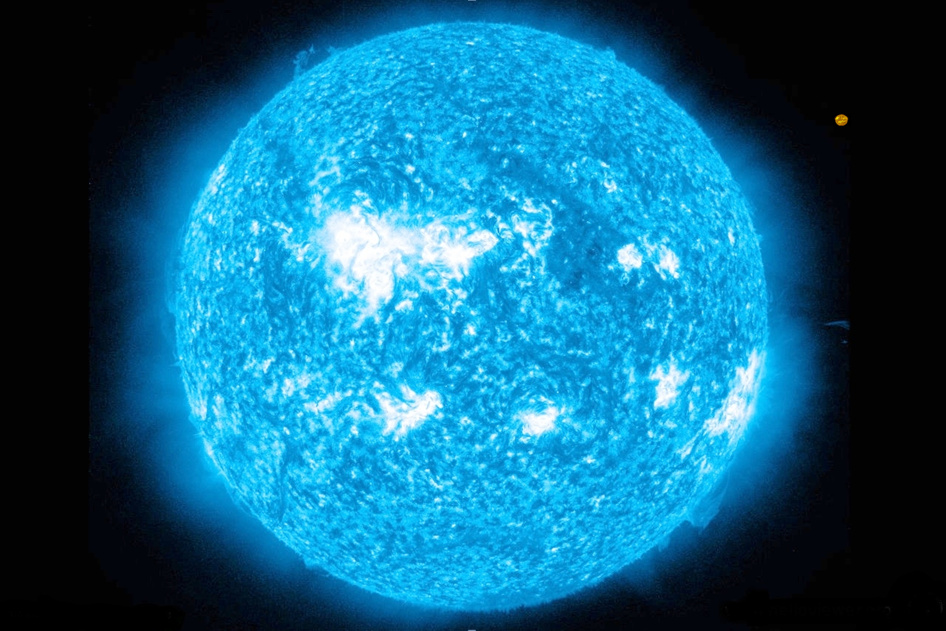

| NO. | CARACTERISTICAS |
|---|
| 1 | TEMPERATURA SUPERFICIAL:Las estrellas de tipo B tienen temperaturas superficiales que oscilan entre aproximadamente 10,000 y 30,000 Kelvin. |  |
| 2 | ESPECTRO:- Su espectro está dominado por líneas de absorción del helio neutral (He I), junto con líneas de hidrógeno menos prominentes que en las estrellas de tipo A.
- A medida que se avanza en la secuencia hacia temperaturas más altas (tipo B0 a B9), las líneas de helio se vuelven más prominentes.
|
| 3 | COLOR:Son de color azul-blanco, debido a su alta temperatura. |
| 4 | BRILLO:Son extremadamente luminosas, mucho más brillantes que las estrellas de tipo A y el Sol. Su magnitud absoluta varía, pero en general son muy luminosas y visibles a grandes distancias. |
| 5 | EJEMPLOS NOTABLES:- Rigel (β Orionis) en la constelación de Orión.
- Spica (α Virginis) en la constelación de Virgo.
- Vega (α Lyrae) es a veces catalogada como una estrella de tipo B en lugar de A debido a su temperatura, aunque esto varía en algunas clasificaciones.
|
| 6 | CICLO DE VIDA:- Las estrellas de tipo B tienen vidas relativamente cortas debido a su gran masa y alta tasa de fusión nuclear. Viven generalmente de decenas de millones de años, mucho menos que estrellas más frías y menos masivas.
- A menudo terminan su vida en explosiones de supernova, dejando remanentes como estrellas de neutrones o agujeros negros.
|